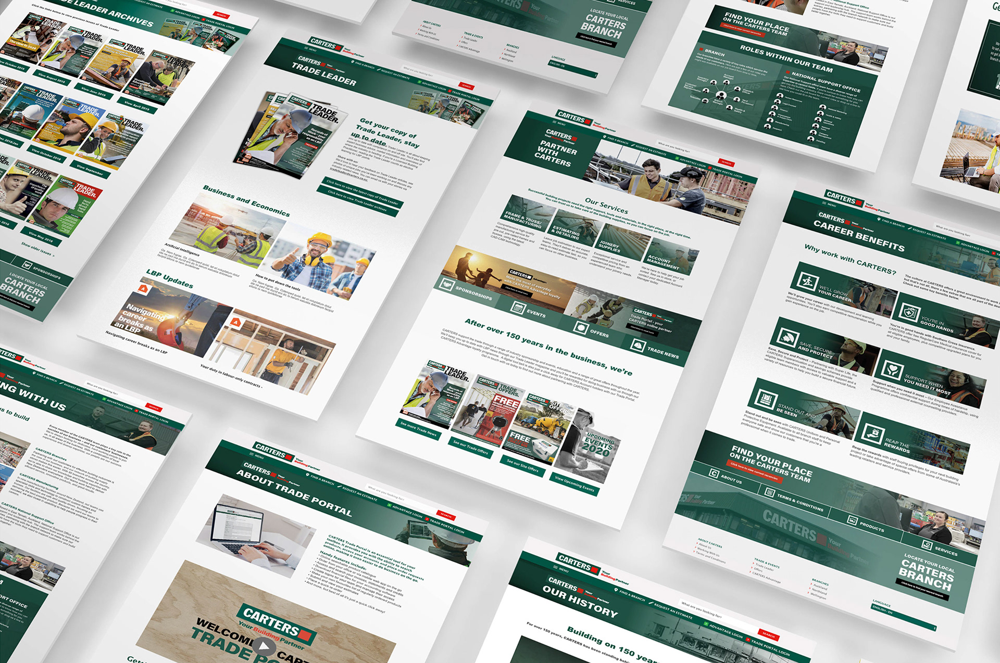
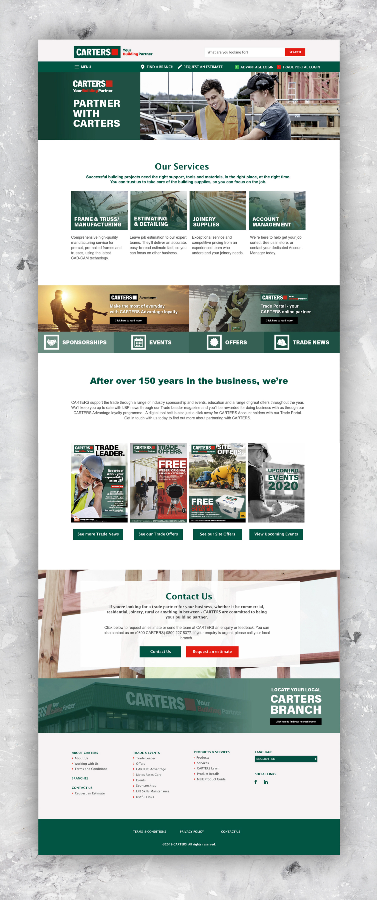

Website design project
CARTERS Website & Photography
Summary
I designed website concepts and supporting photography for CARTERS to better showcase promotions, services, and the company’s value to trade customers.
The project combined UX page planning with an on-location shoot to create a more authentic, practical, and trust-building digital brand experience.
CARTERS is a New Zealand-owned building supplies company, with 50 branches across the country and over 150 years of history. The aim of this project was to create a website that could showcase their current promotions, services, history, and benefits to their customer base.
My involvement in this project included building wireframes and page templates in Adobe XD based on site maps and information provided by the team. I also created the low and high-fidelity mockups and all the graphic components required, with content then implemented via SAP Hybris.
To keep the website authentic to the company, I did a photoshoot at both residential and commercial building sites and CARTERS branches. The photos captured the interactions between CARTERS Account Managers and their customers to communicate that CARTERS were there to support them as a trade partner.

For over a decade, I’ve been turning ideas into experiences and digital things people actually want to engage with. I work across branding, digital design, marketing, UI/UX, and AI-assisted vibe coding and design workflow. I’m happiest where storytelling, design, and technology overlap as that’s usually where the good stuff happens.